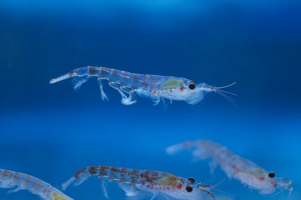

About Antarctic Krill
Antarctic Krill live in big schools called swarms. The schools have cliques led by the most popular krill.
Krill clique
Sea observations:
- The sea is lovely
- The sea is dark
- The sea is deep
Krill poetry
Krill are chill. Krill will kill. Krill are so chill they will kill. Click links below for more info.